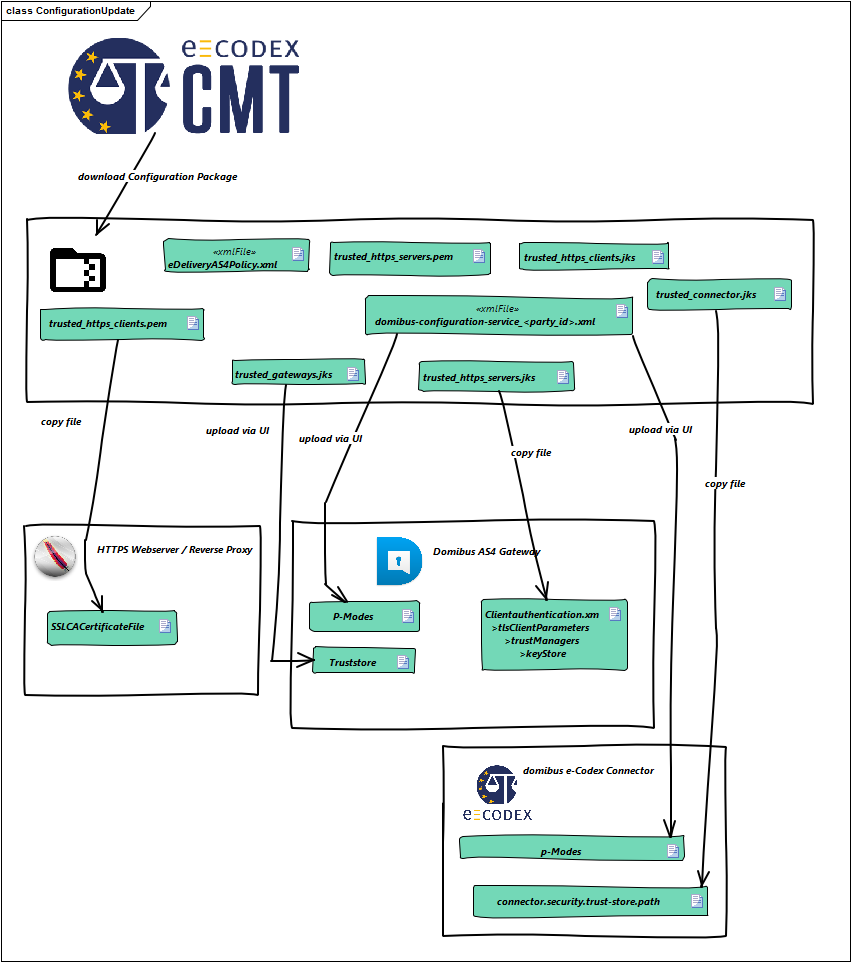
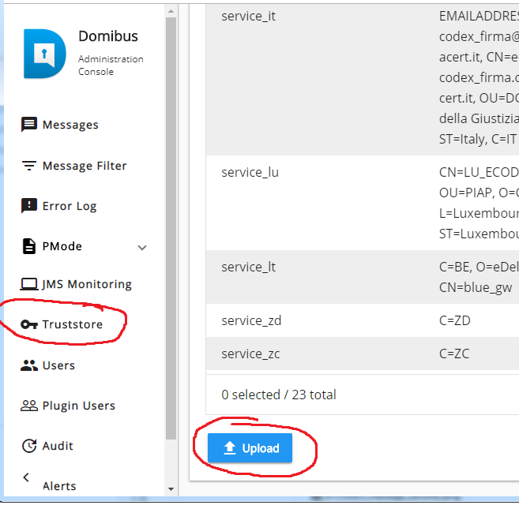
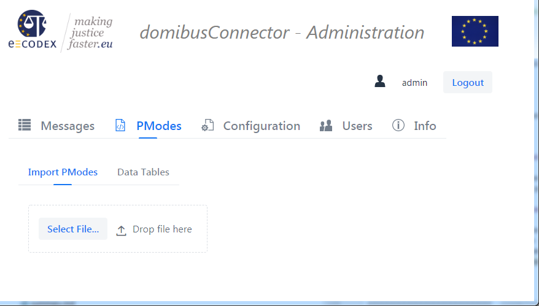

<VirtualHost _default_:443>
SSLEngine on
ServerName localhost:443
SSLCertificateFile "${SRVROOT}/conf/ssl/server.crt"
SSLCertificateKeyFile "${SRVROOT}/conf/ssl/server.key"
# The following Parameter holds all trusted client certificates (2)
# (and thier parent certificates) in pem-format.
SSLCACertificateFile "${SRVROOT}/conf/ssl/trusted_clients.pem"
DocumentRoot "${SRVROOT}/htdocs"
CustomLog "${SRVROOT}/logs/ssl_request.log" \
"%t %h %{SSL_PROTOCOL}x %{SSL_CIPHER}x \"%r\" %b"
<Directory "${SRVROOT}/htdocs">
Options Indexes Includes FollowSymLinks
AllowOverride AuthConfig Limit FileInfo
Require all granted
</Directory>
#always protect the whole v-host to avoid post-handshake authentication!
SSLVerifyClient Require
<Location "/domibus/services/msh" >
ProxyPass <gateway>/domibus/services/msh
ProxyPassReverse <gateway>/domibus/services/msh
</Location>
</virtualhost>The e-Codex environment establishes the connection betweent the access points (usually domibus gateway) over https connections. For this purpose multiple configuration parameters are necessary.
| Configuration Item | Description |
|---|---|
Access-Point URL |
The https address where the Gateway is reachable.<br> eg: https://ecodexgw.example.com/domibus/services/msh |
Incoming IP-Addresses |
IP-Addresses which are used for incoming traffic. This would enable your e-Codex partners to only allow traffic to this IP-Adresses |
Outgoing IP-Addresses |
IP-Addresses which the connection is made from. This will help your partners to only allow this specific ips to access thier webserver. Its mostly for a security reason to block unwanted access |
TLS/SSL Webserver-Server certificate (1) |
As the Request are sent over HTTPS the webserver needs a Certificate. An alias name of the certificate must match the domain name. The whole certificate-chain must be shared with your e-Codex partners. The certificate is used by the server to authenticate itself. The webserver client (the gateway, when it is sending a message) is validating this certificate. |
TLS/SSL Webserver-Client certificate (2) |
Not only the server needs to authenticate itself, also the client is required to authenticate itself at the webserver |
Access-Point/Gateway Certificate (3) |
The by the gateway sent messages are being signed. For this purpose the gateway needs a certificate. This certficiate must be distributed to the other partners to ensure trust and also to enable the other gateways to encrypt the message, when sent to your gateway. |
Connector/e-Codex Certificate (4) |
The by the connector generated ASIC-S Container and evidences are also signed. For this purpose the connector also needs a certificate. This certificate must also be shared with your partners to ensure trust |
All these configuration parameters can be configured on the CMT. The CMT is able to merge all this configurations together and generate a package for each e-Codex member. After this step the package must be downloaded and the configuration of each member has to be updated.
Example Configuration Package
Example Configuration Package

| Name | Description |
|---|---|
trusted_https_servers.pem (a) |
The certificate chains of all trusted webservers (1) in the pem-format. |
trusted_https_servers.jks (b) |
The certificate chains fo all trusted webserver (1) in java key store format. |
trusted_https_clients.pem (c) |
The certificate chains of all trusted webserver (2) clients in pem-format. |
trusted_https_clients.jks (d) |
The certificate chains of all trusted webserver (2) clients in jks-format |
trusted_gateways.jks (e) |
The certificate chains of all trusted gateways (3) |
trusted_connectors.jks (f) |
The certificate chains of all trusted connectors (4) |
eDeliveryAS4Policy.xml (g) |
This file contains the ws-security-policy and defines which encryption and signature algorithms are allowed between 2 access-points. It also defines if 2-way TLS/SSL encryption/authentication is required or optional. |
domibus-configuration-<country>.xml (h) |
This file contains the p-Mode configuration. The p-modes are defining the connection parameters between two access-points. Within the p-Modes also the securityPolicy is referenced. They also define which message types are allowed. |
JKS vs. PEM-Format
The jks format is the default keystore format in java. The PEM-Format on the other side is used within apache webservers. It contains the certificates Base64 encoded in a text file.
Configuration Update Overview
The following files needs to be copied or uploaded:
-
trusted_https_clients.pem (c) must be copied to the Webserver
-
trusted_gateways.jks (e) must be uploaded via the domibus UI into the domibus gw
-
domibus-configuration-<country>.xml (h) must be uploaded via the domibus UI into the domibus gw
-
trusted_https_servers.jks (b) must be copied into the domibus conf keystores folder
-
trusted_connectors.jks (f) must be copied into the domibus connector keystores folder
-
domibus-configuration-<country>.xml (h) must also be uploaded via the admin UI into the domibus connector
Configuration update overview

Update Webserver Configuration
If 2way-ssl is enabled the webserver is doing the client authentication. So the webserver configuration needs to be updated. If you are using the example configuration, the trusted_https_clients.pem file must be copied into the apache configuration. The following code-block contains an example Apache 2way-SSL-Configration.
Update Gateway Configuration
The gateway needs to be updated on 3 places:
-
The trusted webserver certificates (file (b))
-
The trusted gateway certificates (file (e))
-
The p-Modes itself (file (h))
Sometimes also an update of the security policy may be necessary.
|
Important
|
This description only gives a brief overview. For more details consult the gateway administration guide! |
Update Gateway Client Configuration | trusted_https_servers.jks (b)
If a webserver certificate changes the trusted_https_servers.jks must be copied to the location configured within the clientauthentication.xml file. The file is usually located under
<domibus_tomcat>/conf/domibus/clientauthentication.xml
<http-conf:tlsClientParameters disableCNCheck="true" secureSocketProtocol="TLSv1.2"
xmlns:http-conf="http://cxf.apache.org/transports/http/configuration"
xmlns:security="http://cxf.apache.org/configuration/security">
<security:trustManagers>
<!-- the following line contains the store which holds all trusted
webserver certificates (file (b)) and thier parent certificates -->
<security:keyStore type="JKS"
password="changeit"
file="${domibus.config.location}/keystores/trusted_https_servers.jks"
/>
</security:trustManagers>
<security:keyManagers keyPassword="12345">
<!-- this key store contains the web client private key,
the public certificate is distributed with
the trusted_https_clients store -->
<security:keyStore
type="JKS"
password="12345"
file="${domibus.config.location}/keystores/https_client_keystore.jks"
/>
</security:keyManagers>
</http-conf:tlsClientParameters>Update Trusted Gateways Configuration
The gateway certificates are updated by uploading the trusted_gateways.jks (file (e)) into the domibus gateway. This can be done with the admin ui. A restart is not required.

Figure 1. Upload Truststore
Update p-Modes
The p-Modes can also be updated by uploading the new p-modes file with the admin-ui. A restart is not required.
Update Connector Configuration
Within the connector the following parameters must be updated:
-
p-Modes (connector: 4.0, 4.1)
-
trusted connector certificates
Update Connector p-Modes Configuration
The connector (4.0, 4.1) also requires the upload of the p-Modes. This can be done with the connector admin ui. Log into the admin ui and upload the p-Modes file.

Update Trusted Connectors Certificates
Currently it is not possible to update the trusted-connector certificates within the admin-ui. The keystore has to be replaced. To do this copy the file (f) to
<connector_tomcat>/conf/connector/keystores/trusted_connectors.jks
And make sure that the connector property [connector.security.trust-store.path] points to that location! The following block contains an excerpt of the connector configuration with the relevant properties.
############################# connector truststore #############################
# Holds all public keys of partners to validate
# sent and received ASIC-S containers against.
#
connector.security.trust-store.path=file:./conf/connector/keystores/trusted_connectors.jks
connector.security.trust-store.password=changeit